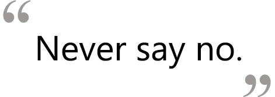

Science Representative: Bryan Aeyeung

Nicknames: Bryan
Year: Junior
Major: MCB Biochemistry
Favorite childhood movie? The Jurassic Park Series? I remember that I use to play a lot with dinosaurs...
If you were a certain type of food, what would you be? Pineapple. Its sweet if you pick it right, acidic if to early or fermented if too late. It grows in tropical regions, and is very difficult to grow.
I am just as high maintenanced and stubborn; in certain ways. It's also my favorite food.
Most Visited Websites: Currently Ebay. I am trying to place a bid on an unlocked Windows smartphone with a Qwerty Keypad and WIFI so that I don't have to pay for a data plan at AT&T.
What do you see yourself doing after college? I need a degree in medicine/pharmacy/or research. I don't see how I could be confined to any one job, so the logistics are still out of order. But traveling is a definite plan after I secure myself.
What do you like to do on your free time? Read and then write right afterwards. Research career options, and research laboratory. Play tennis and badminton ~ but I don't really consider that my free time.
If you had one song to describe you as a person, what would it be and why? Sooner or Later by Mat Kearney. It reminds me to look forward, but not too far ahead into the future. Especially when you don't know what you want for the future; the time will pass and something new will come up in your life. Essentially, enjoy the present moment and make it count.
If you had 24 hours to live, what would you do? Run a marathon.